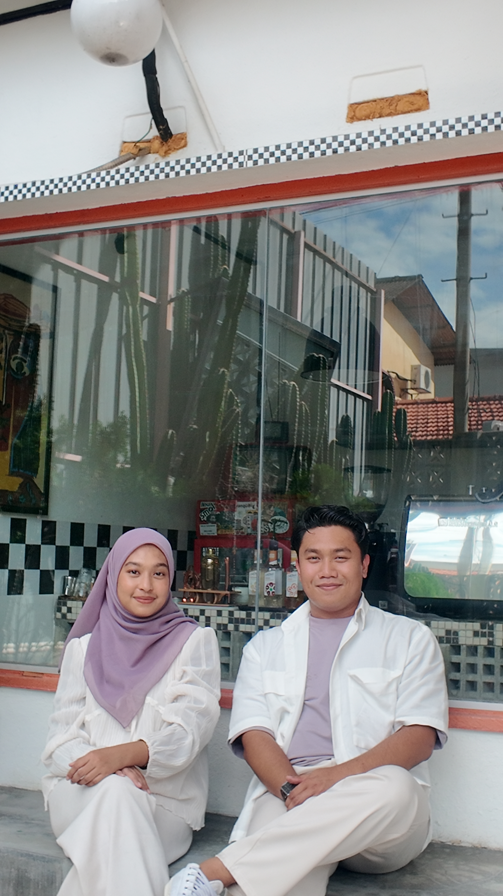

Here's a little appreciation for you❤
Happy 7th Anniversary sayang.Thank you for staying with me until now.Kekadang kamu penat nak melayan saya,kamu sabar dengan saya.Apapun yang jadi kamu tetap stay dengan saya sampailah sekarang.Tbh,makin lama dengan kamu makin banyak saya kenal kamu and guess what?Makin saya sayang dekat kamu.There's no words can describe how valuable diri kamu kat saya.If saya hilang kamu saya jugak akan hilang diri saya.Being with you is like my dream life.Saya tak kata perfect but Idk it is an amazing Life.You need to know how beautiful and gorgeous you are.Eventho you always said no,but sumpah taknak dengar dan taknak percaya.Kamu cantik and you did looks like my Little Pwwwwiiiinnncesssssss.Thankyou for be my back-bone dalam semua bendaa,Thankyou always support sayaaa and Thankyou for sentiasa ada.I would say that we kekadang ada salah faham,terasa and sakit hati, but we always manage to solve it and make it up.What ever happened between us tak kurangkan setitik pun rasa sayang dekat masing masing.I wanna make you my wife and I'll show you.Lambat atau cepat,sakit atau happy saya yakin one day kita akan kawin jugak.Saya takmau orang lain dah,saya takmau kenai orang baru dah.Saya nak kamu sahaja,My Nurul Syamimi.I hope we keep counting days.Das ist alles von mir.
Saya sayang kamu,I love you und Ich Liebe Dich❤
You clean my house❤
You make me smile when I am down❤

You are so kind❤

You are divine❤

I'm glad to know that you are mine❤

Thank you for all that you do to make my life better❤
I love you❤